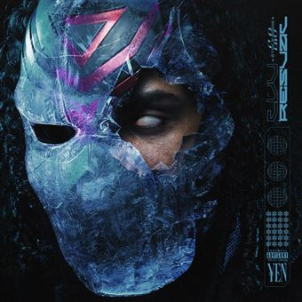

Mustafar
- Big Brother
- Celeste
- Hyrule
- Un Viano A Venise
- Beethoven
- Ballade Nocturne III
- Aznvr
- France Gall
- Souvenir
- Souvenir Lointain
- Rosalia
- Jeune Vador
- Faucon Millenium
- Bentley
- Brille Comme Une Star
- Marley
- Christian Dior
- Lanvin
- John Lennon
- Brique Sur Brique
- Casino Royal 007
2023
En 2022 Luv-resval a sortie deux versions de l'album "Étoile Noire 2.0"

Étoile Noire 2.0 (¥EN)
- ¥S2 - 1 : Rocky
- ¥S2 - 2 : Ezio Auditore
- ¥S2 - 3 : Vampire Rolls Royce
- ¥S2 - 4 : Katon
- ¥S2 - 5 : Shadow
- ¥S2 - 6 : ZLM
- De La Fontaine
- Les Borgia
- Flûte de pan
- Super Saïyen 1
- Picsou
- Super Saïyen 2
- Tout s'en va
2022
Étoile Noire 2.0 : ZLM
- Luv de Vinci
- Wallachia
- Bonaparte
- Armageddon
- Xan
- Vengeance (feat. Koba LaD)
- Chemin vers le ciel
- Hôtel California
- Balade nocturne, Part II
- Athéna (feat. Dinos)
- LV Rose (feat. Holly Evans)
2022
En 2021 il a également sorti "Étoile Noire" en deux parties
Étoile Noire : Nébuleuse
- Les Borgia
- Dyrroth
- Super Saïyen 1
- Kurt (feat. Zefor)
- Super Saïyen 2
- Picsou
- MPC, Part II - La rivière
- Cette fille
- La pluie continue de tomber
- Flûte de pan
- Space cake (feat. Savage Toddy)
- Jamais revenue (feat. Josman)
- Hadès (feat. Lujipeka)
- Pellicule
- 20 ans
- Blue Ferrari (feat. Savage Toddy)
- Haze (feat. Chily)
- Phone (feat. Roni0block & Savage Toddy)
- Jusqu'au lendemain
2021

Étoile Noire : Brise-Monde
- Les Borgia
- Célébration 2 (feat. Kore & Alkpote)
- Super Saïyen 1
- Tatooine (feat. Savage Toddy)
- Super Saïyen 2
- Picsou
- MPC, Part II - La rivière
- Cette fille
- Les anges
- Flûte de pan
- Tout s’en va
- Jamais revenue (feat. Josman)
- La princesse et le crapaud
- J'ai fait un rêve
- Hadès (feat. Lujipeka)
- Blue Ferrari (feat. Savage Toddy)
- Haze (feat. Chily)
- Caramelo
- Jusqu'au lendemain
2021